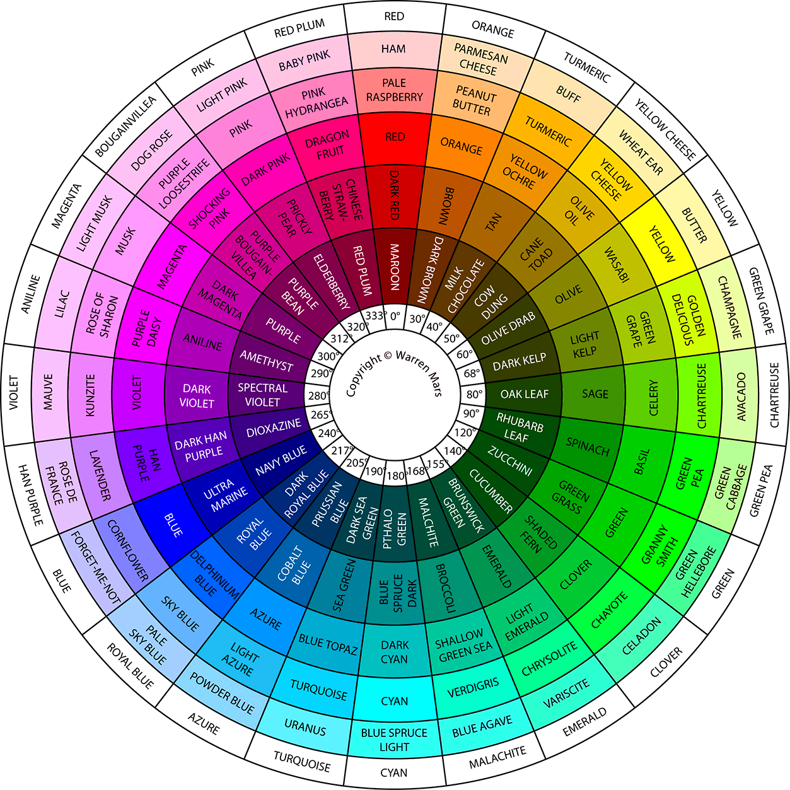

مقادیر رنگ های HSL در باوزرهای سافاری، فایرفاکس، کروم، آپرا و اینترنت اکسپلورر10 قابل شناسایی است.
HSL، مخفف رنگ، اشباع و روشنایی است.

رنگ و یا فام:
از صفر تا 360 درجه است. صفر رنگ قرمز، سبز عدد 120 و آبی مقدار 240 است.
اشباع:
مقادیر درصد است؛ به این معنی که سایه رنگ خاکستری 0 درصد و رنگ کامل 100 درصد است.
روشنایی: مقدار آن را با درصد نشان داده و از صفر درصد رنگ مشکی تا 100 درصد رنگ سفید را در بر می گیرد.